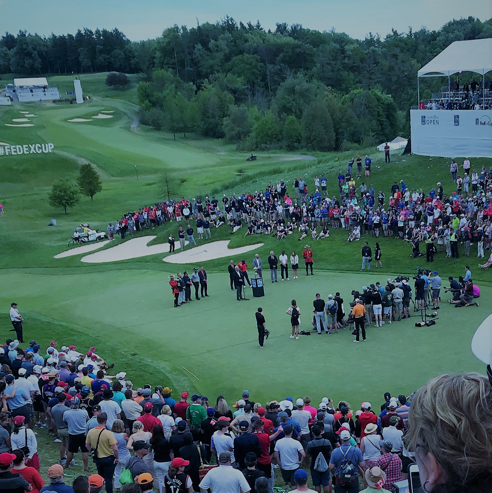
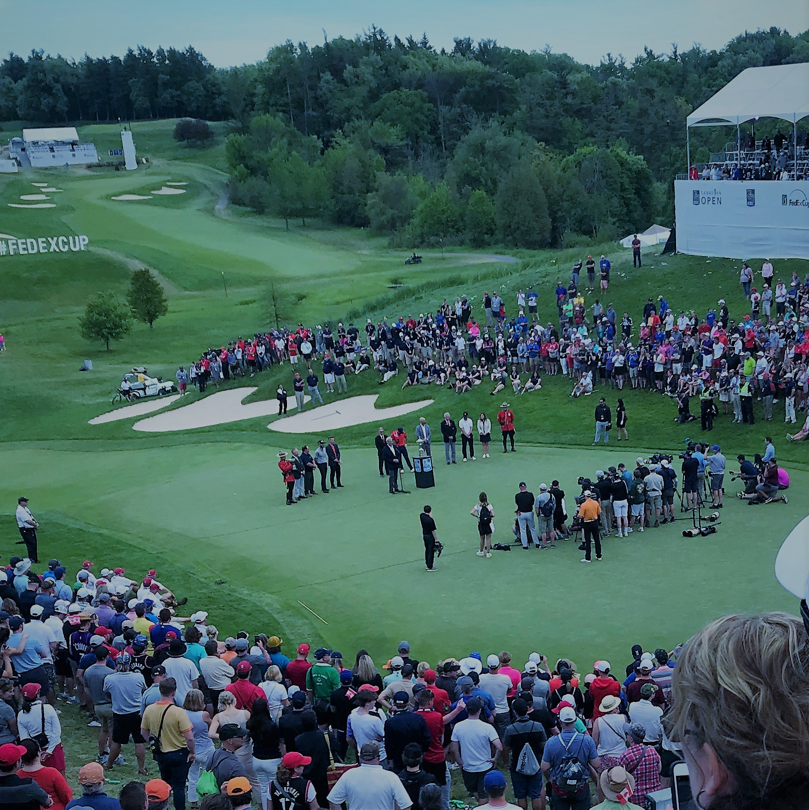

About Me
.JPG)
My hometown is Rossland, British Columbia, Canada. I grew up surrounded by wilderness with mountains, rivers and beauty as far as the eye can see. I believe this natural beauty inspired my passionate creativity. I spent my time with my brother; skiing, golfing, playing soccer and basketball, hiking and fishing, and creating games. We created board games and sports games, and new games from old games with intricate rules. Playing video games gradually developed into learning to build video games of our own. I’ve always been naturally talented with the principles of mathematics and am fascinated by physics. Our game building coincided with rapid development in IT technology and software and led to my curiosity towards web and game design. After secondary graduation, I was offered an opportunity in the direct marketing industry and that started my journey in Ontario.


The journey taught me a lot about marketing, communication, networking and self-motivation. After 2 months of studying and developing my skills, I became the top representative for the location and ranked in the top 5 for the country. Through the years I travelled all over Ontario, New Brunswick and Nova Scotia during which I had climbed to a Regional Sales Manager role for southern Ontario. Although my life revolved around sales I still had a great interest towards software development. 2+ years ago from now I started getting serious about my interest and began teaching myself different programming languages and theories about software development.
Although I'm no expert by any means yet, my passion has consistently increased over the last 2+ years of teaching myself different languages, applications, SDKs, API’s and theories. My brother and I have worked on a couple of full scale games over the last 2 years. Although we have not released anything yet we will be launching something soon. Keep an eye out for it in the app store.
 

When I am not working these days I spend most of my time coding or reading about software. My goal is to one day run a small development firm working on applications and mobile games. Recently my brother and I have been working on a mobile game that we are playing to release in the near future. To view, some of my projects check out the projects tab and hope to work with you in the future.